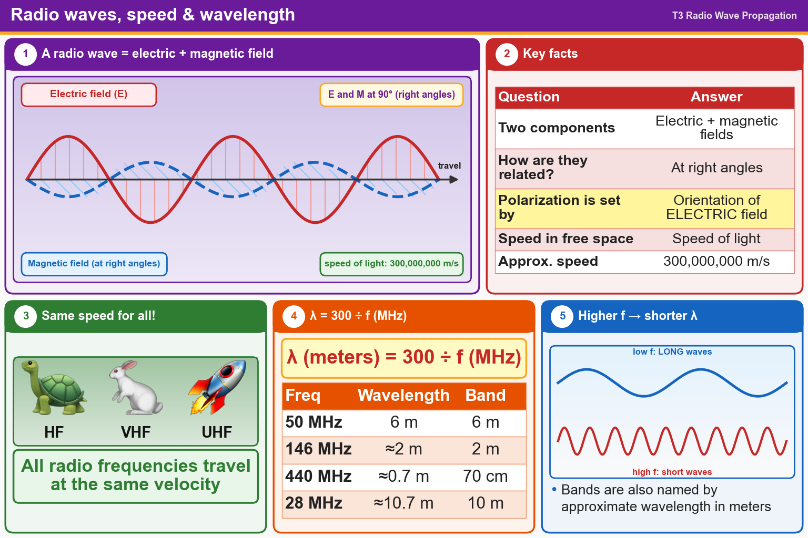

💡 Electric + magnetic fields at right angles. Speed of light. Wavelength (m) = 300 ÷ MHz.
Pick an answer for each question, then press Grade at the bottom.
T3B03
What are the two components of a radio wave?
✘A.Voltage and current
✘B.Ionizing and non-ionizing radiation
✘C.Impedance and reactance
✔D.Electric and magnetic fields
T3B01
What is the relationship between the electric and magnetic fields of an electromagnetic wave?
✘A.They travel at different speeds
✔B.They are at right angles
✘C.They revolve in opposite directions
✘D.They are in parallel
T3B02
What property of a radio wave defines its polarization?
✘A.The orientation of the magnetic field
✔B.The orientation of the electric field
✘C.The ratio of the velocity to the wavelength
✘D.The ratio of the energy in the magnetic field to the energy in the electric field
T3B04
What is the velocity of a radio wave traveling through free space?
✘A.Speed of sound
✔B.Speed of light
✘C.0.86 times the speed of light
✘D.1.86 times the speed of sound
T3B11
What is the approximate velocity of a radio wave in free space?
✘A.150,000,000 meters per second
✔B.300,000,000 meters per second
✘C.150,000,000 miles per hour
✘D.300,000,000 miles per hour
T3B12
Which of these frequencies travels at the highest velocity in free space?
✔A.All radio frequencies travel at the same velocity
✘B.UHF
✘C.VHF
✘D.Microwaves
T3B05
What is the relationship between wavelength and frequency?
✔A.Wavelength gets shorter as frequency increases
✘B.Wavelength gets longer as frequency increases
✘C.Wavelength is constant at all frequencies
✘D.Wavelength and frequency increase as path length increases
T3B06
What is the formula for converting frequency to approximate wavelength in meters?
✘A.Wavelength in meters equals frequency in megahertz divided by 300
✘B.Wavelength in meters equals frequency in hertz divided by 300
✔C.Wavelength in meters equals 300 divided by frequency in megahertz
✘D.Wavelength in meters equals frequency in hertz multiplied by 300
T3B07
In addition to frequency, which of the following is used to identify amateur radio bands?
✘A.Channel numbers
✘B.Traditional letter/number designators
✔C.The approximate wavelength in meters
✘D.All these choices are correct